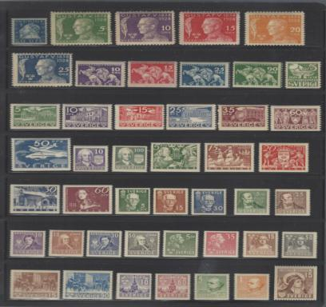

A SMALL TEST OF A BIG PROMISE
It can see
the picture.
Can it count?
Ask a vision model to count a wall of bricks. It gives you a number. It even tells you how sure it is. The difficult part is knowing which to trust.
Follow the evidenceLoading the recorded answer…
Reading the saved pilot results…
Imagine you’re checking inventory. A rough estimate might be enough to plan a delivery. It is a different matter when the count has to be right.
In this pilot, nine vision models get the same six images: bottle caps, books, buffaloes, bricks, cement bags, and stamps. Each receives a simple request: count the objects, then report the probability that the answer is exactly correct.
The ground-truth counts stay out of the prompt. The models have to look.
THE FIRST LOOK
Neat rows make it look easy.
The stamp image offers an inviting place to start: objects arranged in separate rows, with clear edges. The rows have different lengths. Count each row, then add the row totals.
Then move to the herd, the shelf, the wall. Objects touch. Boundaries compete for attention. The results change sharply.
That is a possible explanation, not a tested cause: these six images vary in object type and count as well as arrangement.

Exact answers for each image · one mark per model
A DIFFERENT KIND OF RIGHT
Close is useful.
Exact is a higher bar.
A count can be a good estimate and still fail the promise of exactness. The distinction changes how you read a leaderboard.
THE CONFIDENCE TRAP
A sure answer can
still be a wrong answer.
Could you avoid mistakes by accepting only confident answers? Try moving the cutoff. The remaining answers show what that rule would have done in this pilot.
Select an answer to inspect its count and confidence.
WHAT TO DO WITH THE ANSWER
Pay for the task
you actually need.
If the job allows an estimate, compare count deviation and cost together. If the job demands an exact tally, build in a verification step; this pilot gives little support for relying on stated confidence alone.
Higher spending does not give a clean accuracy ranking.
Cost of all six requests vs. average count deviation · lower and left is better
What we’d want to confirm
This is one run on six selected images, with one answer per model and image. Image difficulty, sampling, and provider behavior may change the result. The story scores against the supplied metadata; the full set still needs an independent count audit. Repeat the test on a larger, independently checked set before choosing a production model or a confidence threshold.
The next question is practical: how much counting error can your task tolerate? Decide that first. Then test the model against it.
Explore every prediction on page 2The evidence behind the story
Image source: six selected Group 1 images from FSC-147 / Learning To Count Everything, by Viresh Ranjan, Udbhav Sharma, Thu Nguyen, and Minh Hoai (CVPR 2021). Download the source images · Read the paper · Recorded download URL. This pilot uses a selected subset, not the full FSC-147 benchmark.
The benchmark script requests JSON counts and confidence with low reasoning effort, a 4,096-token cap, no tools, no retries, and no provider fallbacks. Non-GPT models use temperature 0; GPT models use their default sampling. Each model is pinned to its configured provider endpoint.
Average count deviation is the mean of |prediction − ground truth| ÷ ground truth × 100, with each image weighted equally. Exact answers require equality. Costs are the saved API-reported charges, not current list prices. Ground truth means the supplied benchmark metadata counts; these have not been independently audited here.
File index: data manifest.
Story approach: data-story skill. All findings and charts are calculated from the saved results in your browser.